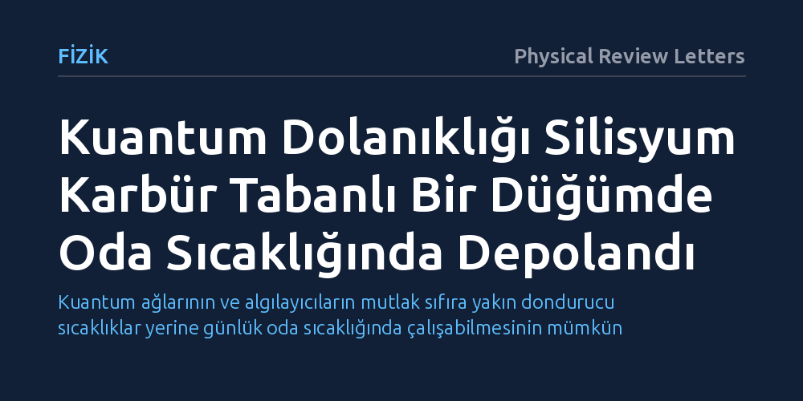

FIZIK · Physical Review Letters · 2026-09-08
Araştırmacılar, silisyum karbür kristalindeki bir kuantum düğümünde elektron ile çekirdek arasındaki dolanık kuantum durumunu aktararak oda sıcaklığında depolamayı başardı. Bu bulgu, aşırı soğutmaya ihtiyaç duymadan çalışan katı hal kuantum bilgi ağlarının geliştirilebileceğini gösteriyor.
Kuantum ağlarının ve algılayıcıların mutlak sıfıra yakın dondurucu sıcaklıklar yerine günlük oda sıcaklığında çalışabilmesinin mümkün olduğunu gösterir.

Kuantum teknolojilerinin en büyük hedeflerinden biri, bilginin klasik bitler yerine süperpozisyon ve dolanıklık gibi kuantum mekaniği ilkeleriyle işlendiği güvenli ağlar kurmaktır. Ancak kuantum durumları çevresel etkilere ve ısıya karşı son derece kırılgandır; en küçük bir sıcaklık artışı bile bu hassas bağların kopmasına yol açar. Bu nedenle mevcut kuantum sistemlerinin büyük kısmı, mutlak sıfıra yakın dondurucu dereceler sağlayan devasa ve maliyetli soğutucularda çalıştırılmaktadır.
Oda sıcaklığında kararlı bir şekilde kuantum dolanıklığını koruyabilmek ve saklayabilmek, kuantum internetin ve hassas kuantum algılayıcıların laboratuvar dışına çıkabilmesi için çözülmesi gereken temel engellerden biridir. Araştırmacılar bu zorluğu aşabilmek için katı hal malzemelerindeki atomik kusurların sunduğu korunaklı ortamlara yönelmektedir.
Bu çalışmada, elektronik sanayisinde yaygın olarak kullanılan silisyum karbür (SiC) kristali kuantum düğümü olarak değerlendirildi. Malzemenin kristal kafesinde yer alan belirli kusurlar, yapay bir atom gibi davranarak elektron ve atom çekirdeği (nükleer) spinlerinin kuantum biti olarak kontrol edilmesine olanak tanır.
Deney düzeneğinde araştırmacılar, elektron spini ile nükleer spin arasında dolanık bir durum oluşturdu. Ardından bu dolanıklığı, çevresel elektriksel ve manyetik gürültüden daha az etkilenen nükleer hafızaya eşevreli olarak aktararak oda sıcaklığındaki termal dalgalanmalara karşı başarıyla korumayı başardı.
Elde edilen sonuçlar, kuantum dolanıklığının karmaşık kriyojenik soğutma sistemlerine ihtiyaç duyulmadan katı hal bir yapıda depolanabileceğini doğrulamaktadır. Bu durum, pratik ve oda sıcaklığında işleyebilen kuantum belleklerinin geliştirilmesi yolunda somut bir kanıt sunmaktadır.
Silisyum karbürün mevcut yarı iletken üretim hatlarıyla uyumlu bir malzeme olması, gelecekte bu tür kuantum düğümlerinin büyük ölçekli kuantum işlemcilere ve ağ altyapılarına entegre edilmesini kolaylaştırabilir. Ancak depolama sürelerinin ve aktarım verimliliğinin geniş ölçekli ağlar için yeterliliği üzerine daha fazla araştırma yapılması gerekmektedir.